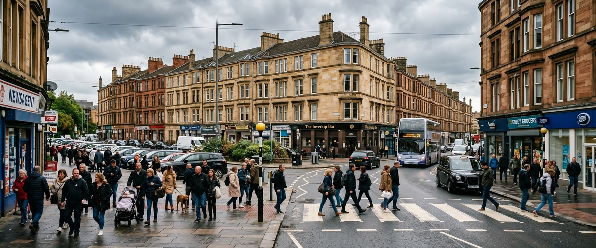
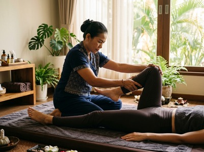
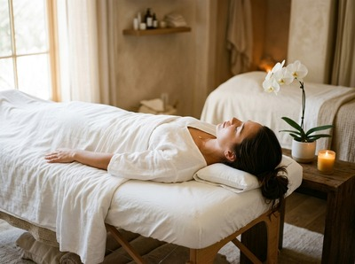

Inverkip is a quiet residential village on the Firth of Clyde coast, sitting around 5 miles southwest of Greenock along the A78.

Known for Kip Marina, the Ardgowan Estate, and its unhurried pace of life, the village attracts families and commuters who value the calm of a coastal setting without straying far from Inverclyde's towns. For anyone searching for thai massage in Inverkip, Thai Massage Greenock on South Street is the closest professional massage therapy practice in the area.
Life in Inverkip tends to revolve around the outdoors: the coastal path, the marina, the surrounding countryside. That active lifestyle is precisely why so many residents benefit from regular massage therapy. Whether you're managing the physical strain that comes with physical work, long drives into Greenock or beyond, or simply carrying the tension that builds up in daily life, a session at Thai Massage Greenock offers genuine relief. You can book your session online and choose a time that fits around your routine.

Thai Massage Greenock is a therapist-led practice, not a spa chain. Jariya Malone personally delivers every treatment, drawing on traditional techniques learned at Bangkok's Wat Po temple, the acknowledged home of Thai massage. Sessions are tailored to what your body needs that day, not delivered from a fixed script.
Clients travelling from Inverkip have access to the full range of treatments at Thai Massage Greenock, including:
Inverkip has its own ScotRail station on the Inverclyde line, with trains running directly to Greenock Central and Greenock West. The journey to Greenock Central takes around 47 minutes, and services run approximately every hour throughout the day. Greenock West station on Inverkip Street is the most convenient stop, placing you just a short walk from South Street.
If you're driving, the A78 takes you directly into Greenock in under 15 minutes, and South Street is straightforward to reach from the town centre. Parking is available nearby. Once you've arrived, Thai Massage Greenock is at 0/2 16 South Street, PA16 8UE.
Ready to plan your visit? Book a treatment online and secure your preferred time before making the trip.
Residents of Inverkip often travel into Greenock and Port Glasgow for work and services anyway, so adding a massage appointment to the journey is a natural fit. Thai Massage Greenock keeps detailed notes on every client and builds on previous sessions, so each visit takes into account how you've been feeling and what's changed since your last treatment.

That kind of continuity matters, particularly for clients dealing with ongoing issues like neck pain, back pain, or chronic stress. It's the difference between a one-off treatment and something that genuinely improves over time.
Inverkip takes its name from the River Kip and sits in the Inverclyde council area, on the A78 trunk road between Greenock and Largs. The village is home to Kip Marina and borders the Ardgowan Estate, giving it a distinctly coastal and rural character rare for a settlement so close to Inverclyde's towns. For more background on the village's history and setting, see Inverkip on Wikipedia.
Inverkip is approximately 5 miles northeast of Thai Massage Greenock on South Street in Greenock. By car via the A78, the journey typically takes around 10 to 15 minutes depending on traffic. It's a straightforward drive with no complicated route changes needed.
Yes. Inverkip has its own ScotRail station with regular services running to Greenock Central and Greenock West. Greenock West on Inverkip Street is the most convenient stop for reaching South Street. Trains run approximately hourly throughout the day, with the journey to Greenock Central taking around 47 minutes.
Same-day bookings are available subject to therapist availability. The easiest way to check is to use the online booking form or call Thai Massage Greenock on 01475 600868. Booking in advance is always recommended to secure your preferred time, especially for evening and weekend slots.
Thai Sports Massage is an excellent choice for anyone who walks, cycles, or spends time outdoors around the coastal path and marina at Inverkip. It targets muscle fatigue, supports recovery, and works on range of motion and joint mobility. Traditional Thai Massage, with its assisted stretching component, is also popular with active clients who want a fuller-body approach.
For current opening hours, please visit the Thai Massage Greenock website or call 01475 600868. Appointments are available during the week and at weekends, with evening slots offered to suit clients travelling from further afield, including villages like Inverkip.